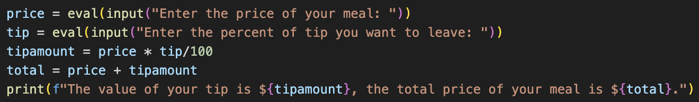
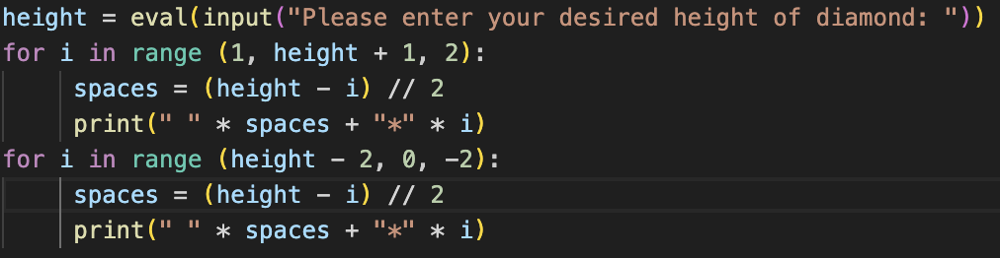
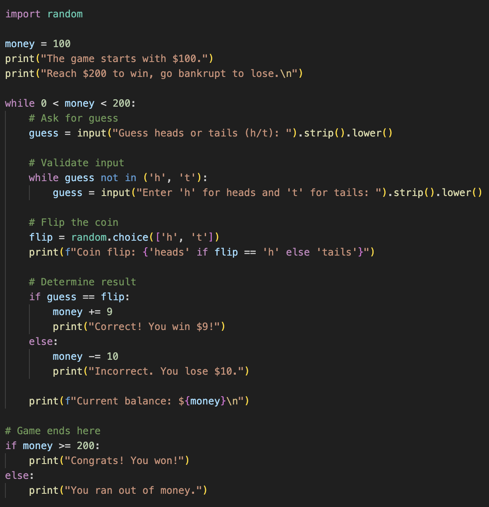
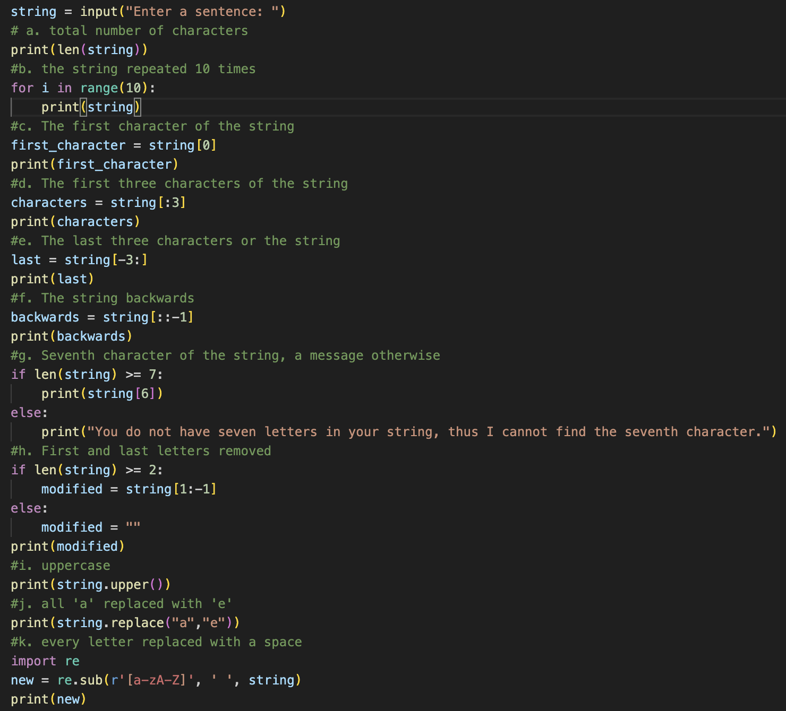
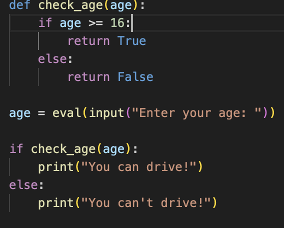

In this unit we focused on understanding five main programming concepts. Below you'll find an example of each and what I learned.

This problem taught me how to store user inputs in variables, how to use those variables to perform mathematical concepts, and then display the results in a logical sentence using f-strings.

This code developed my understanding of using user input. Additionally, it taught me how to use for loops. In this example, I applied a for loop to create a repetitive process (printing the stars), that changed based on location (height).

This sample problem taught me how to use white loops and if statements to create a coin flip game for users. The while loop encompasses the entirety of the game as it ensures that the user is in budget. The if-statement checks for accuracy.

These practices taught me how to alter text in a variety of different ways. This would become helpful in Madlibs project later in the unit.

This code taught me how to create functions that I can then integrate into code and use along side user input, if statements, variables, and more.
In the Mad Libs project I used a combination of the skills I learned above to fill in a Mad Libs of the BSS anthem.
In the Table Top Game Project my partner and I made a game similar to snakes and ladders called Churro Climbs and Chocolate Slides.